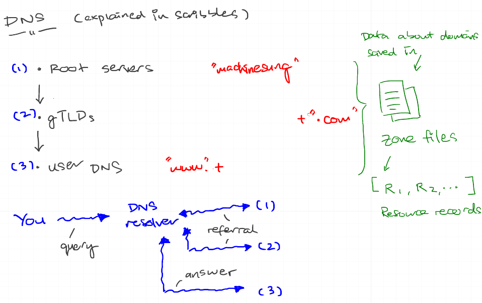

While sitting down one weekend and talking about what to hack on next, Sebastiaan mentioned the concept of DNS over HTTPS and how it might be a great add-on to the existing Commons project. I was eager to give it go for the chance to

Scribbling notes down about DNS.
I wasn't sure how far I would go but actually did managed a working server in Node after an evening, along with toying with Knot DNS on my local machine to test lookups on. Making my way through the IETF draft was also not as scary as it appeared on the onset - on the contrary, it was great fun to stop after some paragraphs and think about why some feature X was proposed and if there would have been any other alternatives that would work as well.
I can definitely see DOH being a great way to address many unpleasantries we face today: privacy, ISPs poisoning the DNS, ad-blocking and more. In fact, Troy Hunt wrote recently about running his own on a Raspberry Pi. I'm more keen for when we roll this out on the existing Commons infrastructure and set my Firefox to it.
Sebastiaan has since shaped my crude PoC into a polished middleware on NPM; you can find the repo here on Github